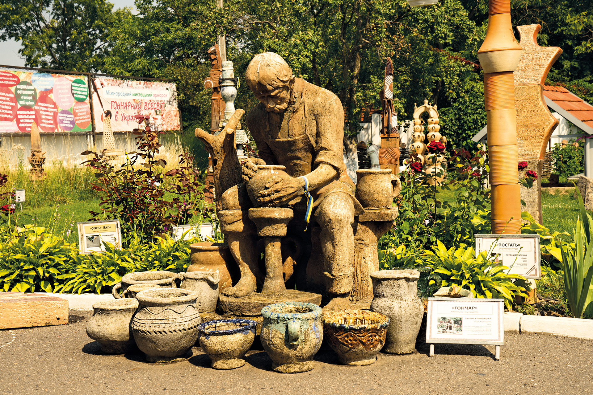
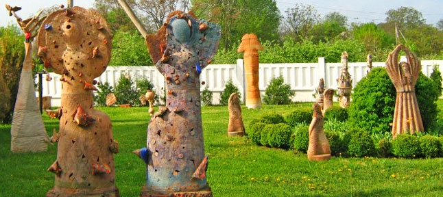
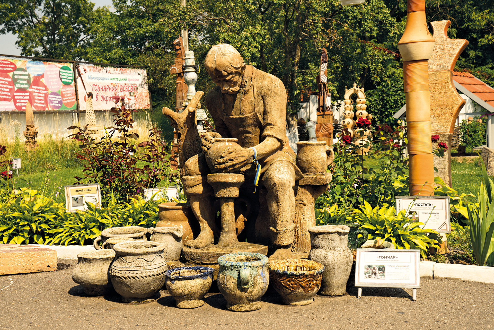
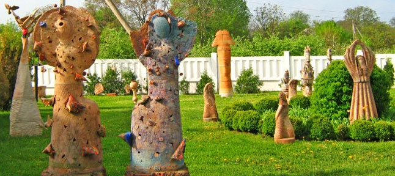

Національний музей українського гончарства розташований в Опішні – невеликому селищі на мальовничій Полтавщині. Він з'явився тут зовсім не випадково – Опішня здавна славилася своїми керамічними виробами. Їх виготовляють ще з епохи неоліту. Також селище вважають центром української гончарної справи. До музею-заповідника входить багато підрозділів, кожен з яких займається вивченням феномену українського гончарства. Якщо прагнете дізнатись більше про ремесло – відвідайте
Опішнянський Національний музей українського гончарства почав свою історію відносно недавно – у березні 1986 року. Три роки потому на його базі почали формувати державний музей-заповідник. У ньому взялися розвивати не тільки культурний, а й науковий напрямок, досліджувати українську гончарну справу. Як результат кропіткої праці – понад 55 000 зразків глиняних виробів із усіх куточків України. 2002 року музей отримав статус національного. Заклад є майданчиком для цікавих виставок та конференцій, тут щодня вирує мистецьке та наукове життя.
.jpg) 


